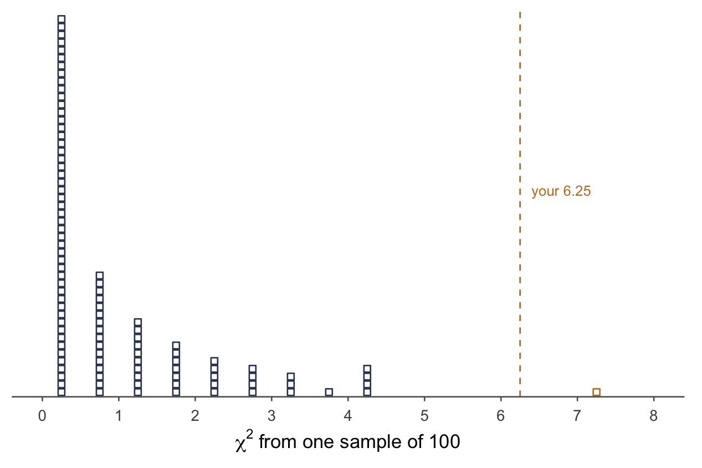
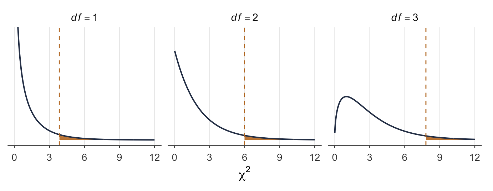
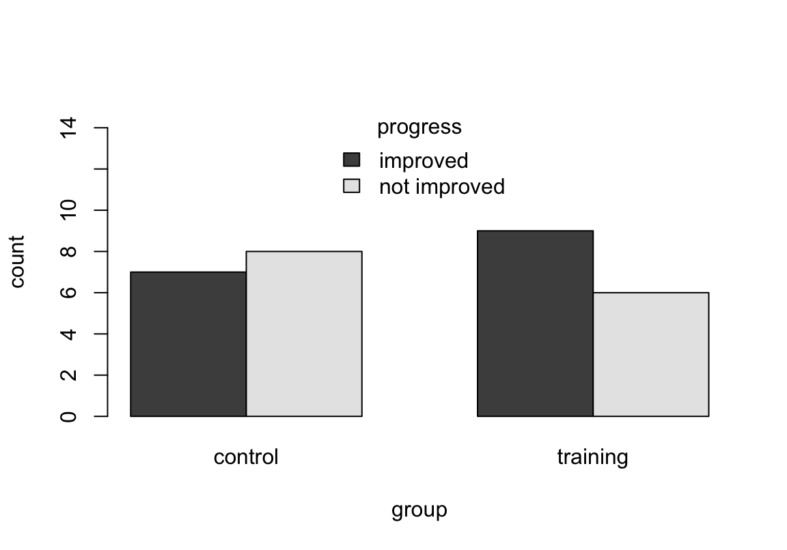

Week 4 · Probabilities and tests for categorical variables
counting instead of measuring
The moth knew every burrow in the wood where a screen was still glowing at night, and in many of those burrows someone lay tossing and turning.
“Phone by the bed, bad sleep,” he said, “always together.”
“Together that often,” said the bat, “it can’t be anything else: it means something.”
The dormouse turned over, towards the side of the wood where the burrows were dark.
“And over there,” she asked, “where the phone stays out in the hall: how do they sleep there?”
The moth didn’t know: he had never looked inside a dark burrow.
What you learn this week
counting instead of measuring: categorical variables in a contingency table
three probabilities from one table: marginal, joint and conditional
when two variables are independent, and the multiplication rule
the expected counts when nothing is going on
the χ² test of independence, by hand and in R
why χ² has one tail and still doesn’t pick a side
what to do with the correction that R adds without being asked
Counting instead of measuring
So far, every measurement had a number on a scale: a worry score, an age, how long someone sleeps. You can work out a mean of that. But a lot of what you want to know in psychology is a category. Do you sleep poorly or well? Is your phone next to your bed at night, or out in the hall? A variable like that is called categorical (nominal or ordinal), and it has no mean. What you can do: count how often each combination occurs.
The question is still the one from week 1, in different clothes:
Are two categorical variables related in the population, or do you happen to see a pattern in your sample by chance?
For that you need two things this week: a bit of probability theory, and one test, the χ² test (chi-square).
Probabilities from a contingency table
A researcher asks 100 first-year students two things: where is your phone at night, and how do you usually sleep? Two categorical variables, phone location and sleep, each with two categories. Set them out against each other and you get a contingency table:
Phone location and sleep for 100 first-year students
phone
sleeps poorly
sleeps well
total
in the bedroom
30
30
60
elsewhere
10
30
40
total
40
60
100
Every probability you take from a table like this is a fraction. Think of a lucky-dip barrel. Below the fraction line is the barrel: everyone you draw from. Above the line are the hits: the ones who meet the condition.
The marginal probability is about one variable. Draw one student at random from all 100. What is the probability that they sleep poorly?
It is called marginal because you take it from the margin: the edge of the table, where the totals are. In the same way, .
The joint probability is about two things at once. What is the probability that this one student has their phone in the bedroom and sleeps poorly? The barrel is still everyone; the hits are the ones who meet both conditions. That is one cell:
The conditional probability changes the barrel. What is the probability of sleeping poorly, given that the phone is in the bedroom? Now you only draw from the 60 people with their phone in the bedroom. That is your new barrel, and it goes below the line:
You read the vertical bar as given that: what comes after it is the condition, and the condition decides the barrel.
WarningThe order matters
is not the same as . In the second one, the barrel is the 40 poor sleepers, and 30 of them have their phone in the bedroom: . A different number, because a different barrel.
You know this already. The p-value from week 1 is a conditional probability too: the probability of a bike given that the shop is a bakery. Not the probability that it is a bakery, given a bike.
Independent or not
Two variables are independent if one tells you nothing about the other. You know where someone’s phone is at night, and that changes nothing about your guess of how they sleep? Then they are independent. Two rules of thumb go with that, and they say the same thing:
The conditional probabilities are equal in all groups. The probability of sleeping poorly is just as big with the phone in the bedroom as without.
The conditional probabilities are equal to the marginal probability. In each group, the same share sleeps poorly as in the whole table.
In the table:
Not equal. So in this group of 100, phone location and sleep are related: people with their phone in the bedroom sleep poorly more often.
The multiplication rule
When you see and, you quickly think of times. That’s allowed, but only with independence. You also meet this rule as the multiplicative law for independent events, or the product rule for short:
NoteMultiplication rule — only for independent variables
Try it on the table: . But in the table, the joint probability is .30. The rule gives the wrong number, and that is exactly the sign that the two variables are not independent.
The rule you may always use, the general multiplicative law, has a conditional probability in it:
NoteMultiplication rule — always
. That one does work. If and are independent, then is simply , and the second rule turns into the first.
NoteIf you want to go further — the addition rule
Besides and, there is or. With or you may think: at least one of the two. The phone is in the bedroom, or you sleep poorly, or both.
You subtract that last term so that you don’t count the overlap twice. In the table:
Count it yourself: 30 + 30 + 10 = 70 people have their phone in the bedroom, sleep poorly, or both. Only the 30 in the bottom-right cell are left out.
In this group, or in the population?
Look closely at what you just did. You looked at these 100 first-year students, and saw a difference: .50 against .25. For this group, that is a fact. But almost every sample shows some difference, even when the two variables are completely independent in the population. Just as in week 1, where a sample mean almost never came out at exactly 50.
TipTwo questions that look alike
“Are the variables dependent in this group?” Look only at the probabilities in the table. If the conditional probabilities are equal, then: independent. If they differ at all, however little, then: dependent, in this group. No test needed. Always work them out. With real data they almost never come out exactly equal, but in exercises and exam questions they often do. Two pairs of bars show it as well, in Figure 1: the same height, or not.
Figure 1: Left: the phone table from this week, .50 against .25. Right: no new data but a thought experiment, hence the hollow bars: the same 100 first-year students, as the table would look if phone location made no difference. Each bar is as wide as its group. The line is the probability for everyone together, 40 of the 100. On the right, exactly that share sleeps poorly in each group, so the bars end on it; on the left the line lies closer to .50 than to .25, because the wide bar counts for more.
“Are they related in the population?” or “Is the association significant?”Dependent in this group says nothing about that yet. The question then is whether the difference is bigger than chance can make it. The χ² test decides that.
What you expect when nothing is going on
Every test calculates from : pretend nothing is going on, and see how strange your data are then. Here says: phone location and sleep are independent. Which counts should the table have in that case?
Reason it out first. In the whole group, the proportion of poor sleepers is .40. If the two variables are independent, then in each group the proportion of poor sleepers is that same .40: those are the hollow bars of Figure 1. Of the 60 people with their phone in the bedroom, you therefore expect .
That is the multiplication rule for independent variables, times the number of people: . Write the two probabilities as fractions over the grand total , and one cancels out:
Row total times column total, divided by the grand total. That is the short formula:
NoteThe expected count in a cell
: the expected count in a cell, if is true
: the observed count, the one you actually counted
You also meet them as expected and observed frequency, per cell as cell frequency, or for short as and . A frequency is just a count.
The movement for each cell: look sideways to the row total, down to the column total, multiply, and divide by .
The expected counts if phone location and sleep are independent
sleeps poorly
sleeps well
total
in the bedroom
60
elsewhere
40
total
40
60
100
Two things to see. The expected counts have the same totals in the margins (the marginal totals) as the real table; count it yourself. And in a two-by-two table you only need to work out one of them: once the totals are fixed, the other three follow by subtraction (60 − 24 = 36, and so on).
Those expected counts are the most informative part of the whole test. Put them next to what you counted: 30 poor sleepers with their phone in the bedroom, where you expected 24. That’s where the story is.
The χ² test: how far apart are counted and expected?
You want one number that says how far the whole table is from ‘independent’. Start with the deviation in each cell, :
The deviation in each cell
cell
bedroom, poorly
30
24
+6
bedroom, well
30
36
−6
elsewhere, poorly
10
16
−6
elsewhere, well
30
24
+6
Adding them up is no use: the deviations always add up to zero, because what one cell has too many, another has too few. So you square them, so that plus and minus no longer cancel each other out. And you divide each square by its own . Why? Six off when you expected 16 is more news than six off when you expected 36.
NoteThe test statistic
: add up over all cells
: the degrees of freedom, with the number of rows and the number of columns (the total row and total column don’t count)
For the phone and sleep:
Each term is that cell’s contribution to χ². The biggest comes from the smallest cell: 2.25, for the poor sleepers without their phone in the bedroom. There you expected 16 and saw only 10.
And the degrees of freedom: . That is the same as what you saw with the expected counts: in a two-by-two table, everything is fixed once you know one cell. Look at the deviations too: in all four cells it is 6, only the sign changes.
How strange is 6.25? Counting dots again
A χ² of 6.25. Is that a lot? The same question as in week 1, and the same thought experiment. Suppose is true: in the population of first-year students, phone location and sleep are not related. A hundred researchers each draw 100 first-year students, make their contingency table and work out χ². Each χ² becomes one dot, drawn as an open square:

Figure 2: A hundred values of χ², each from a sample of 100 first-year students, drawn from a population in which phone location and sleep are independent. One square is the χ² of one sample, stacked per half unit. Orange: the square beyond your 6.25.
Three things stand out.
Everything lies to the right of 0. A χ² can’t be negative: it is a sum of squares, divided by positive numbers.
Most dots lie close to 0: 65 of the 100 are smaller than 1. Those are the two stacks to the left of 1, with 49 dots between 0 and 0.5 and 16 between 0.5 and 1. In a world without association, every table sits close to its expected counts, but rarely exactly on them.
To the right runs a long, thin tail. Now and then chance draws a table that is quite skewed.
Your 6.25 lies far out in that tail. Count the dots that are at least as big: one of the 100. So in a world without association, a table like that turns up about once in a hundred.
Worked out exactly, without a hundred dots, that shape is called the χ² distribution. Its shape depends on the degrees of freedom:

Figure 3: The χ² distribution with 1, 2 and 3 degrees of freedom. Orange: the right tail beyond the critical value at α = .05 (3.84, 5.99 and 7.81). In all three, the whole tail beyond the line is .05, including the part past the right edge.
The p-value is the area to the right of your χ². In R:
pchisq(6.25, df =1, lower.tail =FALSE)
[1] 0.01241933
So , which is close to the .01 you counted. lower.tail = FALSE asks for the right tail: the area from 6.25 to the right. In the left panel of the figure above, your 6.25 lies to the right of the line at 3.84: the area from 6.25 onwards is a small piece of the orange area, and that piece is .012.
TipWithout R: the critical value
At and α = .05, the critical value is 3.84. If your χ² is at or beyond 3.84, you reject . Here: 6.25 ≥ 3.84, so reject.
Among the dots, five of the 100 were at or beyond 3.84: the four in the stack just past 4, and the orange one. The single dot just before 4 is a 3.75 and just misses. Five of the 100 is .05, as it should be.
Where 3.84 comes from, you’ll see below: it is 1.96 squared. Put 3.84 on your cheat sheet, next to 1.96. With more degrees of freedom the boundary lies further to the right (at it is 5.99). You don’t need to know that one by heart: in an exam, the p is given, or 3.84 is all you need.
NoteTwo ways: the χ² table and pchisq()
Table F, at the back of the Dutch edition (in Dutch), gives the boundaries for every df. With it you bracket your p between two columns. You do that to check yourself: the table and R should come out the same.
You choose the row by df. Here, row 1.
Find the two numbers your χ² lies between. In row 1, 5.41 is under column .02 and 6.63 under column .01. Your 6.25 lies between them. Careful, turn the order round here: a larger χ² goes with a smaller p. So .01 < p < .02.
Not times two. The column heading is the probability in the right tail, and for χ² that is already your whole p. You’ll see why below, in One tail, and yet it picks no side.
R gave p = .012: neatly in between, and both ways land below .05. You already know column .05 of row 1: 3.84.
One tail, and yet it picks no side
Week 1 already said that some tests pick no side, and that a one-sided version doesn’t even exist for them. This is one of those tests.
Look at the formula. Every deviation gets squared: 6 too many and 6 too few both give 36. The minus sign is gone. So χ² doesn’t know which way the association goes. Whether the people with their phone in the bedroom sleep poorly more often or less often: χ² gets big either way. It only measures how far the table is from ‘independent’.
Three things follow from that.
For χ², extreme only means big. A χ² of 0 is not extreme in the other direction; it means the counts are exactly the expected ones. That’s why you look at one tail: the right one.
You don’t multiply the p by two. Both directions of the association are already in that one right tail, because squaring has lumped them together. Times two would count them twice.
A one-sided test is impossible. For that you would have to say which direction you expect, and that direction has vanished in the square.
One tail, and still a test that reacts to an association in either direction: in that sense χ² is two-sided. In short: the tail says where you look, the side says whether you chose a direction beforehand. χ² is one-tailed, but two-sided.
Why 3.84: the fold
With a two-by-two table you can watch it happen. There, χ² is exactly the square of a z: the difference in the proportion of poor sleepers between the two groups, expressed in standard errors. Here .
A z like that follows a smooth, symmetric bell, with a left half and a right half. A two-sided test at α = .05 means, there: .025 beyond −1.96 and .025 beyond 1.96. Square z, and the left half folds onto the right: −1.96 and 1.96 both become .
Figure 4: On the left, the bell of z, with .025 beyond −1.96 and .025 beyond 1.96. On the right, χ² with one degree of freedom: z squared. There the two tails of z lie together beyond 3.84: together .05, in one tail. Squaring does stretch that tail: lower and longer, but still .05.
In χ², the two tails of z lie together in one tail. That is why the critical value is 3.84, and why the ‘times two’ is already inside the right tail: the tail of z beyond 2.5 is .006, and twice that is .012, exactly the p of your χ².
Maybe you know χ² as a whale. It only gets its hump with more degrees of freedom. With one degree of freedom it is almost nothing but tail. Look again at Figure 3: at three degrees of freedom the hump is already there.
The six steps
The same six steps as in week 1.
Hypotheses.
: phone location and sleep are independent
: phone location and sleep are related
Both about the population of first-year students. α = .05.
Sampling distribution. The χ² distribution with .
Test statistic. .
p-value. , from the right tail. And .012 ≤ .05. Without R you see the same: 6.25 ≥ 3.84, and in table F you bracket your p between two columns: .01 < p < .02.
Statistical conclusion. Reject the null hypothesis that phone location and sleep are independent.
Conclusion in context. Among first-year students, phone location is related to how they sleep: in this sample, .50 of the people with their phone in the bedroom slept poorly, against .25 of the rest.
In a report, you put the test in one sentence, with the degrees of freedom and the number of people between the brackets:
This is how you report it
Phone location was associated with sleep, χ²(1, N = 100) = 6.25, p = .012.
TipYou also see it written like this: :
That is the same null hypothesis, written short. What it means: if the variables are independent in the population, the counts should lie close to the expected ones. (Read literally, it is about your sample, and there is nothing to test there; see week 1.)
You yourself write the version in words, as in step 1. If you see the short version in a multiple-choice question, it is simply the right null hypothesis.
You read which way the association goes in step 6, from the table, not from χ²: χ² picks no side. Look at the conditional probabilities, or at which cells are above their expected count.
NoteCheck in R — chisq.test() and pchisq()
You worked it out by hand. R does the same calculation alongside you, so that you can see it’s right. Type in the table row by row. The names in the code are Dutch, like the ones in the dataset: telefoon is the phone, and uit (out) holds the output.
# the contingency table of the example, row by rowtelefoon <-matrix(c(30, 30, 10, 30), nrow =2, byrow =TRUE)# the test without correction: the same calculation as by handuit <-chisq.test(telefoon, correct =FALSE)uit
# the p-value directly: only the right tail, not times twopchisq(6.25, df =1, lower.tail =FALSE)
[1] 0.01241933
Same χ², same expected counts, same p. Watch correct = FALSE: without that bit, R gives a different number. The reason is below.
With or without correction
Do the test in R without correct = FALSE, and with a two-by-two table you get a different answer:
# without correct = FALSE: for two by two, Yates' correctiontelefoon <-matrix(c(30, 30, 10, 30), nrow =2, byrow =TRUE)chisq.test(telefoon)
Pearson's Chi-squared test with Yates' continuity correction
data: telefoon
X-squared = 5.2517, df = 1, p-value = 0.02192
χ² is now 5.25 instead of 6.25, and p is .022 instead of .012. The heading line of the output says why: with Yates’ continuity correction.
What is that? Counts jump: you count 30 or 31 poor sleepers, never 30.4. The χ² distribution you take the p from is smooth. With a two-by-two table, especially with few people, that smooth distribution doesn’t quite fit, and the p comes out a little too small. So Yates’ continuity correction first moves each deviation half a unit closer to zero, before squaring: here instead of . That makes χ² smaller and p bigger: the test becomes more careful.
WarningWhat you do
By hand: without correction. That is the formula of this week. If a question asks for χ² for a table, that is the number it means.
R as a check on your handwork:chisq.test(..., correct = FALSE). Then you get exactly your own number back.
If you’re shown R output: take the p that is there, and look in the heading line to see which test it is. If it says with Yates’ continuity correction, that p is the one with the correction.
If the two lead to different decisions, you are on a borderline case (exercise 4.6). Follow what the question gives you. Given a table: calculate without correction. Given R output: use the p from that output. If you write a report yourself, say which version you used.
The correction only exists for a two-by-two table. With a bigger table, R calculates without correction.
NoteIf you want to go further — no approximation: Fisher’s exact test
Yates’ correction is a patch: the smooth χ² distribution doesn’t exactly fit counts that jump. There is also a test that doesn’t approximate at all, but works out every table with the same marginal totals exactly: Fisher’s exact test. In R it is called fisher.test(), and you give it the same table.
For the phone and sleep it gives , close to the .012 without and the .022 with correction. For the earplugs of exercise 4.6 it gives .057: there it sides with Yates. So a borderline case really is a borderline case.
You won’t calculate it this week; it’s good to know the name for when you meet it in a book or in R output.
What χ² doesn’t tell you
Which way. χ² has no direction. You read the direction from the table.
How strong. χ² grows with the number of people. Double the phone table (60, 60, 20 and 60): the probabilities stay exactly the same, but χ² becomes 12.50, twice as much. So a big sample makes even a small association significant. How strong an association is, you measure with an effect size; that comes in week 5 (Effect sizes and power).
What the cause is. That phone location and sleep are related doesn’t mean the phone ruins your sleep. Maybe it is the other way round, and poor sleepers reach for their phone more often because they’re lying awake anyway. The test only sees association.
In R: a contingency table and the test
Once again you use the practice dataset slaapstudie (sleep study) from week 1: 30 first-year students who sleep poorly, half of them with a sleep training, the other half without. With it you do four things in R: make a contingency table, draw it, do the χ² test, and ask for the expected counts.
The question: do people with a training improve more often? Improving is a category you make yourself here. Suppose the researchers agreed beforehand: anyone whose worry score afterwards is at least 3 points lower than before has improved.
## Load the data ----load("slaapstudie.RData")
The names in the code are Dutch, like the columns of the dataset:
piekeren_voor and piekeren_na: the worry score before and after
groep: the group, controle or training
daling: the drop, and vooruit: improved (literally forward)
ja and nee: yes and no, and tabel: the table
## A new column: who improved? ----# ifelse(condition, what if TRUE, what if FALSE)daling <- slaapstudie$piekeren_voor - slaapstudie$piekeren_naslaapstudie$vooruit <-ifelse(daling >=3, "ja", "nee")## The contingency table ----# first the variable you count, then the groupstabel <-table(slaapstudie$vooruit, slaapstudie$groep)tabel
controle training
ja 7 9
nee 8 6
# with the totals addedaddmargins(tabel)
controle training Sum
ja 7 9 16
nee 8 6 14
Sum 15 15 30
table() counts every combination. addmargins() adds the row and column totals: the margins, where the marginal probabilities come from.
In the training group, .60 improved (9 of the 15), in the control group .47.
The bar chart. Only barplot(tabel, beside = TRUE) is needed; the rest is layout, and you may skip it.
## The bar chart ----barplot(tabel, beside =TRUE, # bars side by side, not stackedlegend.text =TRUE, # a legend: which colour is ja, which neeylim =c(0, 15), # the axis up to 15, so the legend fitsxlab ="group", ylab ="count", # names on the axesargs.legend =list(title ="improved", x ="top", bty ="n"))# the legend at the top, with a title and no box

Figure 5: Improvement per group in the sleep study. Dark: improved (ja); light: not improved (nee).
Is that difference bigger than chance can make it? The test:
## The chi-square test ----# the way R does it by default# (for two by two: with Yates' correction)chisq.test(slaapstudie$vooruit, slaapstudie$groep)
Pearson's Chi-squared test with Yates' continuity correction
data: slaapstudie$vooruit and slaapstudie$groep
X-squared = 0.13393, df = 1, p-value = 0.7144
# without correction, the way you calculate by handuit <-chisq.test(slaapstudie$vooruit, slaapstudie$groep,correct =FALSE)uit
Pearson's Chi-squared test
data: slaapstudie$vooruit and slaapstudie$groep
X-squared = 0.53571, df = 1, p-value = 0.4642
## The expected counts ----uit$expected
slaapstudie$groep
slaapstudie$vooruit controle training
ja 8 8
nee 7 7
You can give chisq.test() two columns, as here, or a table you already have: chisq.test(tabel, correct = FALSE) gives exactly the same. It is one test, called in two ways.
By hand you would get χ² = 0.54, and that is what R gives with correct = FALSE: . With correction it is . Both well above .05: you do not reject the null hypothesis that group and improvement are independent. With 30 people and an answer of only yes or no, you don’t see much. That doesn’t mean the training doesn’t work (week 1: not significant is not the same as equal).
TipFrom a score to a category: you throw something away
Someone whose worry score drops by 3 points and someone whose score drops by 11 are now both called ja. You’ve lost that difference. With the worry scores themselves, you can compare the two groups as in week 3, with two means. So making a category out of a score is a choice with a price; here you do it to practise in R.
Practice
NoteExercise 4.1 — Concepts
What level of measurement do the variables have in a χ² test? And in a t test?
When are two categorical variables independent?
Give the formula for:
the multiplication rule for independent variables;
the multiplication rule that always holds;
the expected count in a cell;
the χ² test statistic;
the degrees of freedom of χ².
What does a χ² of 0 mean?
What does a large χ² mean?
Why can’t χ² be negative? And why does that make the χ² distribution skewed to the right?
With χ² you look at one tail, and yet you call the test two-sided. Explain.
CautionAnswer 4.1
In a χ² test: categorical (nominal or ordinal); you count how often each combination occurs. In a t test, the dependent variable is a score on a scale (interval or ratio), because you compare means.
When one tells you nothing about the other. In a table: the conditional probabilities are equal in all groups, and so also equal to the marginal probability.
The formulas:
, with rows and columns
That the counts are exactly the expected ones: in the sample there is no association at all.
That the counts are far from the expected ones. If χ² is big enough (), you reject the null hypothesis that the variables are independent.
χ² is a sum of squares, divided by positive numbers; nothing negative can come out of that. So the distribution starts at 0, most values lie close to it, and to the right runs a long tail. To the left it has nowhere to go.
One tail, because only a big χ² is extreme: your p is the area to the right of your χ². Two-sided, because squaring removes the minus sign: χ² reacts to an association in either direction. A cell can have too many or too few, and because the totals are fixed, another cell then automatically has the opposite. That is also why you don’t multiply the p by two. χ² is one-tailed, but two-sided.
NoteExercise 4.2 — Only the marginal totals
For 100 first-year students you know whether they had breakfast that morning, and whether they fell asleep during the day. You only know the totals:
had breakfast
fell asleep
did not fall asleep
total
yes
…
…
70
no
…
…
30
total
20
80
100
Fill in the counts you expect if having breakfast and falling asleep are independent. The cells have to add up to the totals.
Now make up counts with a clear association. These too have to add up to the totals. There is more than one right answer.
CautionAnswer 4.2
Row total times column total, divided by 100:
had breakfast
fell asleep
did not fall asleep
total
yes
14
56
70
no
6
24
30
total
20
80
100
For example, top left: . The rest follows by subtraction. Now the same share falls asleep in both rows: .
The extreme example: all 20 who fell asleep had skipped breakfast.
had breakfast
fell asleep
did not fall asleep
total
yes
0
70
70
no
20
10
30
total
20
80
100
Any table in which the share who fell asleep clearly differs between the two rows is right.
NoteExercise 4.3 — The test by hand
Researchers ask 240 first-year students whether they have an evening job, and whether on weekdays they usually sleep less than seven hours (short) or not (long).
evening job
short
long
total
yes
50
40
90
no
60
90
150
total
110
130
240
What do the researchers want to know?
Write down and .
Work out the expected counts for all cells.
Work out each cell’s contribution to χ², and then χ² itself.
Work out the p-value with pchisq(). Watch the degrees of freedom. (No R to hand? You can still decide: compare with 3.84.)
What is your statistical conclusion at α = .05?
What is your conclusion in context?
CautionShort answer 4.3
The expected counts are 41.25, 48.75, 68.75 and 81.25.
χ² = 5.48.
df = 1; .
Reject.
Having an evening job is related to how long you sleep: with an evening job, you more often sleep less than seven hours.
CautionFull worked answer 4.3 — step by step
Whether having an evening job is related to how long first-year students sleep. In other words: whether the two variables are dependent.
The hypotheses:
: having an evening job and sleep length are independent
: having an evening job and sleep length are related
Row total times column total, divided by 240:
yes, short:
yes, long:
no, short:
no, long:
Check: the rows add up to 90 and 150, the columns to 110 and 130.
Per cell:
cell
yes, short
50
41.25
+8.75
1.856
yes, long
40
48.75
−8.75
1.571
no, short
60
68.75
−8.75
1.114
no, long
90
81.25
+8.75
0.942
χ²
5.48
Keep calculating with the unrounded numbers in your calculator, and only round the final answer.
. Only the right tail, not times two (bijbaan is the evening job):
pchisq(5.483, df =1, lower.tail =FALSE)
[1] 0.01920228
# and the whole test as a checkbijbaan <-matrix(c(50, 40, 60, 90), nrow =2, byrow =TRUE)chisq.test(bijbaan, correct =FALSE)
.019 ≤ .05: reject the null hypothesis that having an evening job and sleep length are independent. Without R you would have seen it too: 5.48 ≥ 3.84.
Among first-year students, having an evening job is related to how long they sleep. In this sample, .56 of the people with an evening job slept less than seven hours, against .40 of the people without one. Whether the job is the cause, the test doesn’t say: maybe people who go to bed late anyway are more likely to take an evening job.
NoteExercise 4.4 — In R
Use the dataset slaapstudie. Did the random assignment work out? With a good random assignment, worrying before the training is not related to the group someone ends up in.
Make a column veel (a lot) that is "ja" if someone scored more than 55 on the worry questionnaire before the training, and "nee" otherwise.
Make a contingency table of veel against groep, with the totals added.
Do the χ² test without correction. What is the p-value, and what do you decide?
Ask for the expected counts.
Does your answer to c mean that the groups worried equally at the start?
CautionAnswer 4.4
## a. the new column ----slaapstudie$veel <-ifelse(slaapstudie$piekeren_voor >55, "ja", "nee")## b. the contingency table ----tabel_veel <-table(slaapstudie$veel, slaapstudie$groep)addmargins(tabel_veel)
controle training Sum
ja 7 6 13
nee 8 9 17
Sum 15 15 30
## c. the test, without correction ----uit_veel <-chisq.test(slaapstudie$veel, slaapstudie$groep, correct =FALSE)uit_veel
Pearson's Chi-squared test
data: slaapstudie$veel and slaapstudie$groep
X-squared = 0.13575, df = 1, p-value = 0.7125
## d. the expected counts ----uit_veel$expected
slaapstudie$groep
slaapstudie$veel controle training
ja 6.5 6.5
nee 8.5 8.5
χ² = 0.14, . You do not reject the null hypothesis that worrying a lot at the start and the group are independent.
See the output: in each group you expect 6.5 people who worry a lot, because the groups are the same size.
No. Not significant is not the same as equal. You just haven’t found any sign that the assignment came out lopsided; that is what you hope, but it is no proof that the groups are equal.
NoteExercise 4.5 — Probabilities from a bigger table
A group of 400 students fill in how tired they usually feel during the day.
hardly
somewhat
very
total
first year
85
95
70
250
later years
75
45
30
150
total
160
140
100
400
Draw one of these students at random. What is the probability that this student …
is in their first year and feels very tired?
feels hardly tired?
feels very tired, given that they are in a later year?
Are year of study and tiredness independent for these 400 students? Look only at the probabilities; don’t do a test.
For this table, R gives X-squared = 10.114, df = 2 and p-value = 0.006364. Why is df 2 here, and what do you decide about the population?
CautionAnswer 4.5
A joint probability: one cell, divided by everyone. .
A marginal probability: the column total, divided by everyone. .
A conditional probability: the barrel is now only the 150 students in a later year. .
No. The barrel here is the row: all first-year students, or all students in a later year. Then go along column by column and compare the two rows:
hardly
somewhat
very
first year
.34
.38
.28
later years
.50
.30
.20
everyone
.40
.35
.25
They are not equal: of the first-year students, .28 feel very tired, of the students in a later year .20. So in this group, year of study and tiredness are dependent.
: two rows and three columns. Once the totals are fixed, you can fill in two cells freely; the rest follows. ≤ .05: you reject the null hypothesis that year of study and tiredness are independent. In the population, too, they are related. (The critical value at is 5.99, and 10.11 lies beyond it.)
NoteExercise 4.6 — With or without correction
For a week, 120 first-year students sleep with or without earplugs. Afterwards they say whether they woke up during the night.
woke up
did not wake up
total
earplugs
10
50
60
no earplugs
20
40
60
total
30
90
120
Work out χ² by hand. Do you reject at α = .05?
A fellow student does the same test in R, with chisq.test(), and gets this (dopjes are the earplugs):
Pearson's Chi-squared test with Yates' continuity correction
data: dopjes
X-squared = 3.6, df = 1, p-value = 0.05778
Why does a different number come out there? And what do you write down if you use this output?
Two ways. Look up your χ² from a and your fellow student’s in table F (in Dutch), row df = 1. Which side of 3.84 do they lie on, between which two columns, and what does that mean for their p? Does that match R? For your χ², pchisq(4.44, df = 1, lower.tail = FALSE) gives the p; your fellow student’s is in the output above.
CautionAnswer 4.6
The expected counts are 15, 45, 15 and 45, and each deviation is 5:
With : 4.44 ≥ 3.84. Reject. (R gives ; for what table F says about it, see c.)
With a two-by-two table, R applies Yates’ correction by default; it says so in the heading line. First each deviation moves half a unit closer to zero: instead of . Then χ² = 3.60, and that lies below 3.84: , do not reject.
This is a borderline case: the two routes give a different decision. What you do depends on what you’re given:
if you only get the table, you calculate without correction: reject;
if you get this output, you take the p that is there: do not reject;
if you write a report yourself, you say that it is the version with the correction, and that with it, the result is only just not significant.
This is how you report it
With Yates’ correction, wearing earplugs was not significantly associated with waking up at night, χ²(1, N = 120) = 3.60, p = .058.
What is never allowed: picking the version that suits you best, after you saw both. That is the same cheating as choosing the direction after seeing the data (week 1).
In row 1 of table F:
The borderline case of exercise 4.6 in table F
lies between
so
R gives
your χ² = 4.44 (without correction)
3.84 (column .05) and 5.02 (column .025)
.025 < p < .05
p = .035
your fellow student’s χ² = 3.60 (with correction)
2.71 (column .10) and 3.84 (column .05)
.05 < p < .10
p = .058
Both agree with R. And in the table you see the borderline case at once: moving each deviation half a unit closer to zero, as the correction does, shifts χ² one column to the left, across the boundary at 3.84. Not times two: for χ², the column heading is already your whole p.
Exam block
This is how you might meet it in an exam: multiple choice with four options, a number to fill in, or yes or no. All you need is your calculator and your cheat sheet: where you need a p-value, it is given in the question. Or, for a two-by-two table, you decide with the boundary 3.84 from your cheat sheet. The exam does not ask you to look anything up in table F; you did that in exercise 4.6, to check yourself.
Questions 1 and 2 are about this table of 80 first-year students:
Alarms and being on time, for 80 first-year students
on time
late
total
two alarms
40
10
50
one alarm
18
12
30
total
58
22
80
NoteQuestion 1 — multiple choice
What is the probability of being on time, given that you set two alarms? And are the number of alarms and being on time dependent, for these 80 first-year students?
.50; dependent
.80; dependent
.50; independent
.80; independent
CautionAnswer question 1
B. The barrel is the 50 people with two alarms: . With one alarm it is . Not equal, so dependent, in this group. .50 is the trap: that is , the joint probability of two alarms and on time.
NoteQuestion 2 — multiple choice
How many people with two alarms do you expect in the column late, if the number of alarms and being on time are independent?
10
8.25
13.75
.275
CautionAnswer question 2
C. . A is the number you counted, not the one you expected. B is the expected count in the row below. D is the probability of being late, not yet a count: you still have to multiply it by 50.
Questions 3 and 4 are about this table of 100 first-year students:
Sport in the evening and falling asleep, for 100 first-year students
falls asleep within 20 minutes
does not fall asleep within 20 minutes
total
sport in the evening
25
25
50
no sport
30
20
50
total
55
45
100
NoteQuestion 3 — multiple choice
You want to test whether sport in the evening and falling asleep quickly are related. What is χ² for this table?
χ² = 0.31
χ² = 1.01
χ² = 3.84
χ² = 25.00
CautionAnswer question 3
B. The expected counts are 27.5 and 22.5 in both rows, and the deviation is 2.5 in every cell:
The other three are each a well-known mistake. A is the p-value that goes with this χ² (in table F, 1.01 lies even further left than the first column of row 1, so p > .25). C is not a χ² of this table but the critical value at : in table F (in Dutch), row 1, column .05. You also come across it with three decimals, as 3.841. D is what you get if you add up the squares and forget to divide by .
NoteQuestion 4 — yes or no
At that χ², do you reject the null hypothesis (α = .05)?
CautionAnswer question 4
No. 1.01 lies below the critical value 3.84 (). You do not reject the null hypothesis that sport in the evening and falling asleep quickly are independent.
NoteQuestion 5 — fill in
A contingency table has 3 rows and 4 columns (not counting the totals). How many degrees of freedom does the χ² test have?
CautionAnswer question 5
6. .
NoteQuestion 6 — multiple choice
Why don’t you multiply the p-value of a χ² test by two?
Because the χ² test is one-sided.
Because both directions of the association are already in the right tail.
Because the χ² distribution is symmetric.
Because with categorical variables you have no null hypothesis.
CautionAnswer question 6
B. Squaring removes the minus sign, so too many and too few both end up on the right. A is the trap: you look at one tail, but the test is not one-sided; it reacts to an association in either direction. C is wrong: the χ² distribution is skewed to the right. D is wrong: says that the variables are independent.
NoteQuestion 7 — multiple choice
A researcher wants to know whether choosing tea or coffee is related to year of study. Which null hypothesis goes with a χ² test?
Choice and year of study are independent.
Choice and year of study are dependent.
First-year students choose coffee more often than students in later years.
The mean year of study is the same for coffee drinkers as for tea drinkers.
CautionAnswer question 7
A. says that nothing is going on: no association. B is . C picks a direction, and χ² has none. D is about means; year of study is a category here.
NoteQuestion 8 — multiple choice
Someone does the test of exercise 4.3 in R, with chisq.test() and no further settings. At the top of the output it says Pearson’s Chi-squared test with Yates’ continuity correction, and below that X-squared = 4.8738, df = 1 and p-value = 0.02727. Which statement is right?
R made a mistake, because by hand χ² = 5.48 came out.
R used a correction; without that correction χ² would be a little bigger.
Because of the correction, you may no longer reject .
You still have to multiply R’s p by two.
CautionAnswer question 8
B. With the correction, R first moves each deviation half a unit closer to zero; that makes χ² smaller. With correct = FALSE you get the 5.48 of your handwork back. C is wrong: even with the correction, p = .027 ≤ .05. D is wrong: χ² has one tail, and that one tail already holds both directions of the association.
NoteQuestion 9 — yes or no
“We found χ²(1, N = 400) = 18.40, p < .001. So year of study is strongly related to sleep length.” Is the second sentence right?
CautionAnswer question 9
No. Significant says that there is an association, not how strong it is. With a great many people, even a small association becomes significant. How strong it is, an effect size tells you (week 5).
NoteQuestion 10 — multiple choice
A researcher asks 300 first-year students whether they drink coffee in the evening, and whether they usually fall asleep within half an hour. Of them, 120 drink coffee in the evening, and 180 do not. Of the coffee drinkers, 78 usually fall asleep within half an hour. Of the first-year students without coffee, 117 usually fall asleep within half an hour.
Is falling asleep within half an hour independent of coffee in the evening, in this group? And what is the probability that a first-year student drawn at random from this group drinks coffee in the evening and falls asleep within half an hour?
dependent; .26
dependent; .65
independent; .26
independent; .65
CautionAnswer question 10
C. There is no table here, so first you put the counts into a contingency table yourself. Quick means: asleep within half an hour. What the question doesn’t give you, you find by subtracting and adding:
Coffee in the evening and falling asleep, for 300 first-year students, built from the question
quick
not quick
total
coffee
78
42
120
no coffee
117
63
180
total
195
105
300
Independent? Don’t compare the counts; compare the conditional probabilities, and put the marginal probability on a third line:
Exactly .65, all three times: in each group, the same share falls asleep quickly as in the whole table. So independent, in this group. With real data you almost never see that, and that is why you might not trust it. Then check it by multiplying: and .
More people without coffee fall asleep quickly (117 against 78), but only because that group is bigger (180 against 120). If you compare the counts, or go by what everyone knows about coffee, you choose dependent. But the question is about this group, and there the numbers decide.
The probability. In Figure 6 only the barrel changes, not the hits.
Figure 6: Orange is coffee and quick: the hits. Each area is as large as its count, and the fraction under a barrel is the orange part of that barrel. The right barrel is only the top row of the left one: the coffee drinkers. In the left barrel, the boundary between quick and not quick lies in the same place in both rows: that is the independence you just found, in a picture.
The question has no given that: the first-year students without coffee are simply still in the barrel. So the barrel is everyone, all 300, and the hits are the 78 coffee drinkers who fall asleep quickly:
The trap is .65, the number you just saw three times. That is the answer to a different question: what is the probability that a coffee drinker falls asleep quickly? Can you hear the difference? There the barrel is only the 120 coffee drinkers.
Counting and dividing is always allowed. The product rule is a second route, and it is allowed only because coffee and falling asleep quickly are independent in this group:
The same number. With the phone in the bedroom, the product rule gave .24 and the table .30: there the two were related, so the rule was not allowed.
![Two bar charts side by side on the same axis 'probability of sleeping poorly', from .00 to .60. On the left, titled 'as it is in these 100 students: not equal, so dependent': two filled blue bars, 'phone in the bedroom (60)' .50 and 'phone elsewhere (40)' .25, each with that probability above it; the bedroom bar is twice as tall as the other one, and one and a half times as wide, because each bar is as wide as its group. On the right, titled 'if the phone made no difference: equal, so independent': the same two bars hollow, outlined only, exactly the same height, both .40. A grey dashed line at .40 runs through both panels, labelled in the right margin as 'everyone together: 40 of 100 = .40'. On the right both bars end exactly on that line; on the left the bedroom bar sticks out above it and the other one stays below it.](04_categorisch_files/figure-html/fig-gelijk-1.png)

![Two lucky-dip barrels side by side, the same width, each drawn as a flat shape a little wider at the top; the left one is tall, the right one only .40 as tall, and it sits at the height of the top row of the left one, as if that row had been slid out sideways. The left barrel is divided into four areas, laid out like the contingency table: at the top the row of the coffee drinkers, with on the left an orange area '78, coffee and quick', the hits, and on the right a light blue area '42, coffee, not quick'; below that, taller because that group is bigger, two grey areas '117, no coffee, quick' and '63, no coffee, not quick'. The boundary between quick and not quick lies in the same place in both rows, and a thin grey line on that boundary runs through the whole barrel. The right barrel is exactly that top row on its own: the same orange area and the same light blue area, as large as on the left, with the same words in them and the same thin grey line. Above the left barrel it says 'barrel: everyone (300)', below it 'P(coffee and quick) = 78/300 = .26'; above the right one 'barrel: only the coffee drinkers (120)', below it 'P(quick | coffee) = 78/120 = .65', in words: the probability of quick, given coffee. Each area is as large as its count, so each fraction is the orange part of the barrel it stands under.](04_categorisch_files/figure-html/fig-tonnen-1.png)